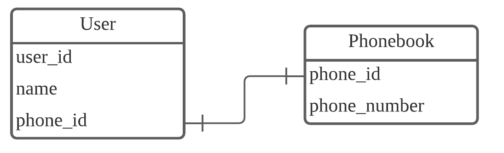
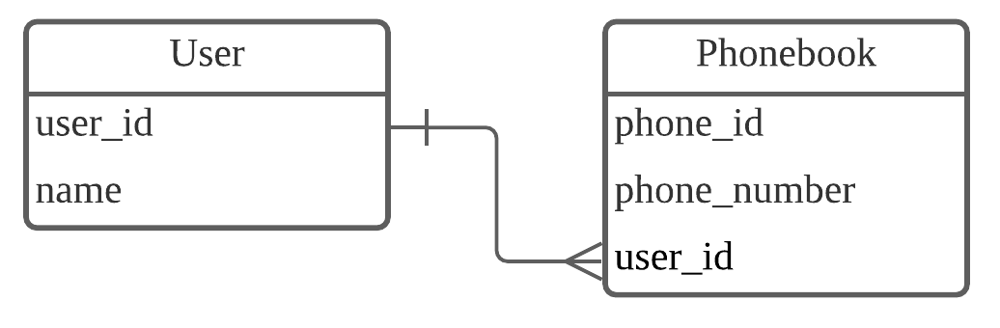
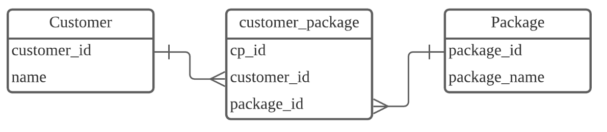
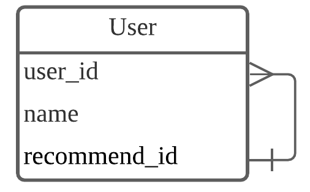

데이터(Data) : 각 항목에 저장되는 값
테이블(Table) : 데이터들을 구조적으로 묶은 목록
컬럼(Column) or 필드(field) : 테이블의 열 하나 하나를 컬럼이라고 부른다.
레코드(Record) : 테이블의 한 행에 저장된 데이터
키(key) : 테이블의 각 레코드를 구분할 수 있는 값이며 각 레코드마다 고유한 값을 가진다.
기본키(primary key)와 외래키(foreign key)등이 있다.
테이블에 저장된 각각의 데이터를 유일하게 구분하는 키로 중복되지 않는 유일한 값이라는 특성을 가진다.
각 테이블 간에 연결을 만들기 위해서 테이블에서 다른 테이블의 참조되는 기본키 칼럼을 외래키라 한다.
테이블과 테이블 사이의 관계 종류로 1:1, 1:N, N:N, 자기 참조(Self Referencing) 관계가 있다.
하나의 레코드가 다른 테이블의 레코드 한 개와 연결된 경우

하나의 레코드가 서로 다른 여러 개의 레코드와 연결된 경우

여러 개의 레코드가 다른 테이블의 여러 개의 레코드와 관계가 있는 경우
관계를 구성하는 방법은 새로운 테이블을 만들어 1:N 관계를 양방향에서 접근한다.

테이블 내에서도 관계가 필요한 경우
